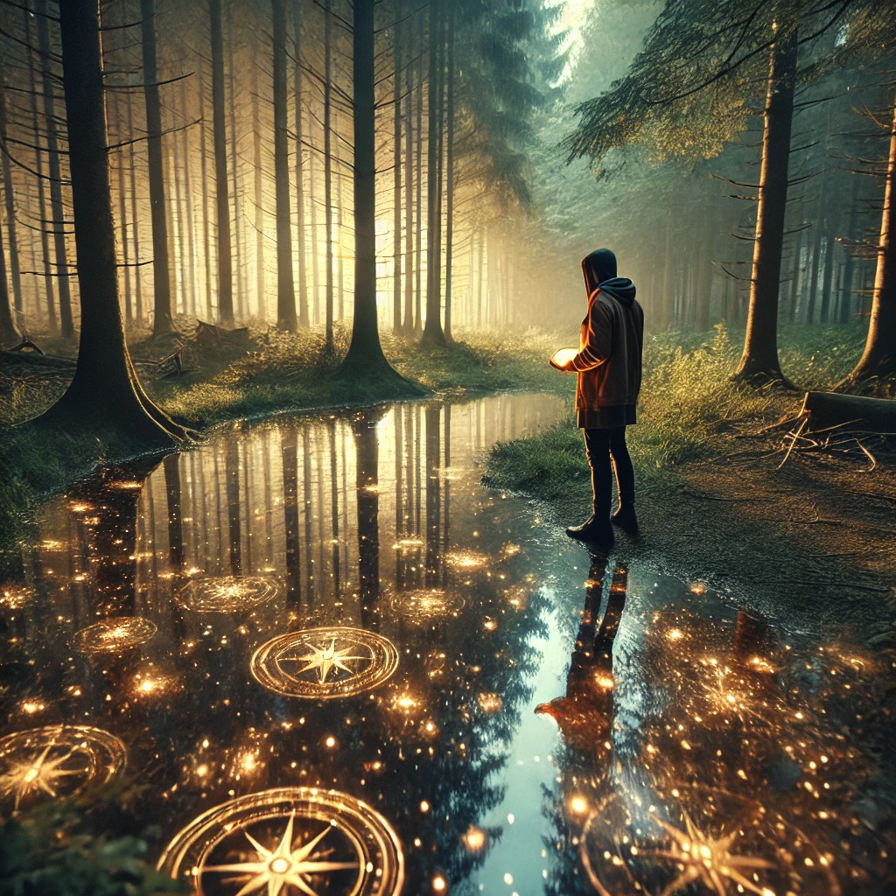

You pause along the path, taking a deep breath as the world around you grows quiet. The compass in your hand dims slightly, as if encouraging you to turn inward. Every choice you've made so far feels alive, their ripples shaping the path ahead. You sense the gravity of your journey, each step a lesson, each turn a revelation.
The silence envelops you, a space for reflection and clarity. Questions arise, not from the outside world, but from within: What have you learned? What do you still seek? The voice of the unseen speaks gently:
“The choices you make define your path, but they also reveal who you are. To reflect is to understand the why behind the what.”
Before you lies a serene pond, its surface shimmering like a mirror. Gazing into its depths, you see fragments of your past decisions, each one waiting to offer insight.

How will you proceed?